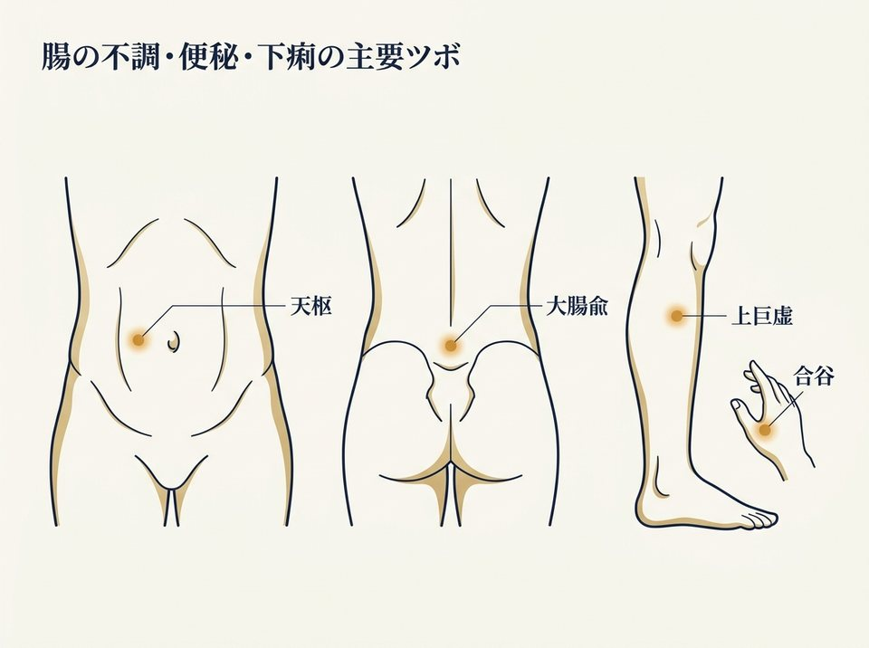

ゾリンジャー・エリソン症候群の鍼灸
ガストリノーマによる胃酸過剰で難治性潰瘍を起こす疾患。専門医の治療を第一に、体調・自律神経を補完します。


院長YouTube解説・関連動画
25〜40%の人では、症状の最初の段階では下痢が現れる
ゾリンジャー・エリソン症候群の症状は、胃や十二指腸、腸のなどの部位に現れる活動性の消化性潰瘍の症状です。活動性の消化性潰瘍の症状では、痛みや出血などがみられます。
25〜40%の人では、症状の最初の段階では下痢が現れることがあり、半分以上の人は、通常の消化性潰瘍と同じくらいの症状しか現れません。
しかし、ゾリンジャー・エリソン症候群では、場合によって、腸の破裂や閉塞、多くの出血が起こることもあり、その場合は、命に危険が及ぶこともあります。
このような症状は、ガストリノーマが分泌する過剰なガストリンによって起こります。しかし、ゾリンジャー・エリソン症候群の25％の人は、ゾリンジャー・エリソン症候群であるとわかった時にはまだ潰瘍がみられないこともあります。
腫瘍による胃酸の過剰分泌によって胃や十二指腸が刺激され、腹痛を感じることがあります。腹痛は、しばしば胃食道逆流症状や消化不良とともに現れます。
胃酸の過剰分泌によって、十二指腸や小腸の中で食物が過剰に分解され、下痢を引き起こすことがあります。
・消化不良
胃酸の過剰分泌によって、食物が胃で十分に消化されないため、消化不良を引き起こすことがあります。
・吐き気や嘔吐
胃酸の過剰分泌によって、胃や十二指腸が刺激されるため、吐き気や嘔吐を引き起こすことがあります。
・脱力感や倦怠感
胃酸の過剰分泌によって、体内のカルシウムが過剰に排出されるため、脱力感や倦怠感を感じることがあります。
・骨粗鬆症
胃酸の過剰分泌によって、カルシウムが過剰に排出され、骨粗鬆症を引き起こすことがあります。
・腫瘍の症状
腫瘍が原因で生じる症状を経験することがあります。例えば、腹部にしこりや腫れが生じたり、体重減少が生じたりすることがあります。
ゾリンジャー・エリソン症候群の改善方法は、胃酸の量を減らす方法や手術、化学的な方法などです。
胃酸の量を減らすためには、プロトンポンプ阻害薬を使います。プロトンポンプ阻害薬では、胃酸の濃度を下げることで、一時的に症状を和らげる効果が期待できます。十分な効果が見られない場合、オクトレオチドの注射を行うこともあります。
腫瘍が1つしかなく、多発性内分泌腫瘍症ではない場合は、手術を行います。手術によってガストリノーマを切りとることで改善が期待できるのです。
ガストリノーマを切り取る手術でも改善が見られない場合は、胃を完全に切除する手術を行うこともあります。
・腫瘍摘出手術
ZESの原因となる腫瘍は、通常は膵臓の中にあるものであり、摘出手術によって除去されます。手術は、腫瘍の位置や大きさに応じて、膵臓全体の摘出や部分摘出など、様々な方法があります。腫瘍が小さい場合は、内視鏡的手術で除去することも可能です。
・酸分泌抑制剤の投与
ZESでは、腫瘍が分泌するガストリンによって胃酸分泌が亢進し、胃潰瘍や十二指腸潰瘍を引き起こすことがあります。このため、胃酸分泌を抑制する薬剤が使用されます。
・一般的に使用される酸分泌抑制剤には、プロトンポンプ阻害剤（PPI）やヒスタミンH2受容体拮抗剤があります。PPIは、胃酸分泌を抑制する効果が高く、通常は1日1回の投与で効果が得られます。一方、H2受容体拮抗剤は、胃酸分泌を抑制する効果がPPIよりも弱く、2回～3回の投与が必要です。
・ゾリンジャー・エリソン症候群に関連する合併症の改善
ZESは、胃酸過多によって胃潰瘍や十二指腸潰瘍を引き起こすことがあります。また、膵臓の腫瘍によって、膵炎や肝臓への転移などの合併症が発生する場合もあります。これらの合併症に対しても、それぞれ適切な改善が行われます。
酸分泌抑制剤や手術によって腫瘍を摘出することで、胃酸過多の症状を改善できますが、腫瘍が再発する可能性があるため、定期的な経過観察が必要です。また、手術ができない場合や手術後の胃酸分泌が十分に抑制できない場合は、酸分泌抑制剤を継続的に投与することが必要です。
胃酸過多によって引き起こされる胃潰瘍や十二指腸潰瘍には、胃酸分泌を抑制する薬剤が使用されます。また、潰瘍が深くなって出血や穿孔を起こす場合は、内視鏡的な処置や外科手術が必要な場合があります。
ゾリンジャー・エリソン症候群を発症している約半分の人は悪性です。そのため、リンパ節転移や肝転移を起こすこともあります。
ゾリンジャー・エリソン症候群は、胸焼けや下痢などの他の病気でも起こり得る症状が現れる病気のため、自分で判断することは難しいです。しかし、ゾリンジャー・エリソン症候群は悪性の場合もある怖い病気なのです。
そのため、定期的に胃カメラを受けたりして調べることを心がけ、発症した場合は、早めに改善に取り組むことが大事です。
▼ 詳しく知りたい項目だけタップして開けます（全項目の医学解説を収録）
01. 原因とメカニズム
なぜ症状が起きるのか・鍼灸の作用機序を読む
▼
01. 原因とメカニズム
なぜ症状が起きるのか・鍼灸の作用機序を読む
主に膵臓や十二指腸壁に発生するガストリノーマという腫瘍が、胃酸分泌を促すホルモン「ガストリン」を過剰に分泌することで、進行が速く治りにくい消化性潰瘍を引き起こす病気です。多発性内分泌腫瘍症の一部として発症することもあり、約半数は悪性で転移を起こす場合もあるため、専門医療機関での早期検査と治療が不可欠です。
なぜ鍼灸で改善へ向かうのか？（作用機序の図解）
ゾリンジャー・エリソン症候群に対する鍼灸は、脳腸相関と迷走神経反射による胃腸運動の調整機序を通じて、お体本来の回復力を引き出します。
胃腸機能と深く結びつく四肢・腹部の経穴を刺激し、体性感覚神経から中枢へ信号を送ります。
脳幹を経由した体性-内臓反射により、副交感神経（迷走神経）経由で胃腸の働きを調整します。
弱まったぜん動を促す一方、下痢型の過剰な収縮や内臓知覚過敏は穏やかに鎮静します。
ストレスで乱れにくい胃腸の土台を整え、胃もたれ・便通異常・吐き気の軽減を目指します。
02. よくあるお悩み
このような症状はありませんか？（4項目）
▼
02. よくあるお悩み
このような症状はありませんか？（4項目）
- ✓繰り返す胃・十二指腸潰瘍や強い胸焼け・上腹部痛がある
- ✓胃酸過多に伴う慢性的な下痢や消化器の不快感が続いている
- ✓専門医での薬物治療や術後経過の中で疲労感が抜けにくい
- ✓悪性リスクや再発への不安からストレス・睡眠障害を感じやすい
03. 当院の施術アプローチ
施術の進め方・改善のポイントを見る
▼
03. 当院の施術アプローチ
施術の進め方・改善のポイントを見る
04. ツボ詳細・セルフケア一覧
胃腸・逆流性食道炎・機能性ディスペプシアのツボ図解（6穴）
▼
04. ツボ詳細・セルフケア一覧
胃腸・逆流性食道炎・機能性ディスペプシアのツボ図解（6穴）
実際の施術ではお一人おひとりの体質・症状に合わせて選穴しますが、胃食道逆流症（GERD）・機能性ディスペプシア・胃痛・吐き気ケアの臨床でよく用いられる代表的なツボの目安です。
| ツボ名 | 位置の目安 | 主な狙い | セルフケアの注意点 |
|---|---|---|---|
| 巨闕（こけつ） | みぞおちの骨のすぐ下 | 胸やけ・みぞおちのつかえ感・横隔膜の緊張緩和 | 食後すぐの強い圧迫は逆流を招くため避けます。 |
| 中脘（ちゅうかん） | みぞおちとおへその真ん中 | 胃もたれ・早期膨満感・胃排出能サポート | 温めながらゆっくり腹式呼吸を行うと緩みます。 |
| 天枢（てんすう） | おへその左右それぞれ指3本分外側 | 消化管全体の蠕動バランス・お腹の張り軽減 | お腹が冷えやすい方は温灸がおすすめです。 |
| 内関（ないかん） | 手首の横ジワから指3本分肘寄りの中央 | 吐き気・胃酸逆流に伴う不快感・下部食道括約筋の調整 | 胃カメラ等の検査前後のセルフケアにも有用です。 |
| 足三里（あしさんり） | 膝の下外側、指4本分下 | 迷走神経を介した胃腸運動調整の最重要穴 | 毎日続けやすい胃腸の養生穴です。 |
| 公孫（こうそん） | 土踏まずの縁、親指の付け根からかかと寄り | 胃痛・胃もたれ・自律神経性の胃腸不調ケア | 内関と組み合わせて優しく押します。 |
05. 医学的根拠・国際査読論文（PubMed / Cochrane）
科学的エビデンス・出典リンク一覧（2件）
▼
05. 医学的根拠・国際査読論文（PubMed / Cochrane）
科学的エビデンス・出典リンク一覧（2件）
国際的な医学データベース（PubMed・Cochrane等）で報告されている過敏性腸症候群（IBS）・便秘・下痢領域の代表的な査読済み鍼灸研究をまとめています（標準治療との併用や研究上の限界を含めて正確に掲載）。
| 年・研究デザイン | 対象・規模 | 主な結果 | 限界・出典 |
|---|---|---|---|
| 2025年 多施設RCT | 下痢型過敏性腸症候群（IBS-D）280名（6病院） | 腹痛および便性状の複合レスポンダー率がシャム鍼比で有意に改善。 | 下痢型中心のデータで他病型への拡張は検証継続中。 Gastroenterology (PMID: 40441496) |
| 2016年 大規模多施設RCT | 慢性重症機能性便秘 1,075名（15病院） | 電鍼8週で週あたり完全自発排便回数がシャム鍼比で有意増加し12週持続。 | 器質的腸閉塞や炎症性腸疾患の除外が前提。 Ann Intern Med (PMID: 27618593) |
参考文献・出典
- 2025年 多施設RCT（下痢型過敏性腸症候群（IBS-D）280名（6病院））— Gastroenterology (PMID: 40441496)
- 2016年 大規模多施設RCT（慢性重症機能性便秘 1,075名（15病院））— Ann Intern Med (PMID: 27618593)
06. よくある質問（FAQ）
よくあるご質問を見る（2件）
▼
06. よくある質問（FAQ）
よくあるご質問を見る（2件）
Q. 胃酸過多や潰瘍を鍼灸だけで治すことはできますか？
いいえ、ガストリノーマは悪性の場合もあるため、必ず専門医療機関での精密検査・薬物治療・手術検討が最優先です。当院は主治医管理下での補完ケアを行います。
Q. 治療中や術後に通院するメリットはありますか？
療養中の慢性的な疲労感、首肩背部の緊張、不安による睡眠の乱れなど、全身のコンディショニングを穏やかに支える目的でご利用いただけます。
あわせて読まれる関連疾患（消化器のお悩み）
椎体・肛門・気管食道・橈骨・腎の複数徴候を合併する先天性疾患。専門医管理下で筋緊張や疲労を補完します。
キノホルムによる薬害で生じた神経障害（新規発症なし）。専門医管理下で慢性期のしびれや筋緊張を補完ケアします。
飲酒が主因でない脂肪肝に炎症・線維化が加わった状態。食事と運動での減量を軸に、倦怠感や生活リズムの乱れを鍼灸で支えます。
長期の過剰飲酒で脂肪肝から肝炎・肝硬変へ進む肝障害。専門医管理と禁酒を基本に疲労や自律神経を整えます。
胃の一部が横隔膜の食道裂孔から上方へ飛び出す状態。医療機関での管理と並行し背部緊張や自律神経を整えます。
胃切除後に食物が小腸へ急激に流入して起こる症候群。主治医の食事指導と並行し自律神経・疲労感をケアします。
CLINICAL RECOVERY CASES
✨ 実際の臨床改善事例・回復経過を見る
銀座本院をはじめ各院での実際の改善事例を症状別に絞り込んでご確認いただけます。
おひとりで悩まず、まずはご相談ください
銀座本院・川口・大宮・横浜・博多・田無の各院でご予約を承っております。